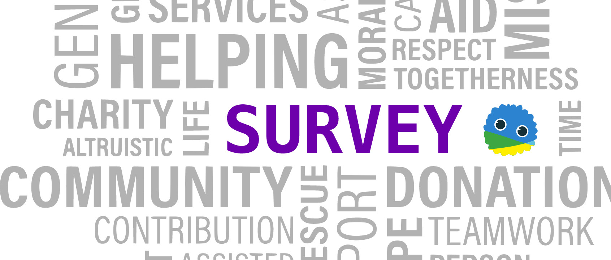

酷儿论坛2020年秋季招新 终！于！来！啦！

杭州酷儿论坛致力于为杭州及周边地区学生性少数人群提供一个多元、健康、平等的环境，促进自我认同和社会认可。
酷儿论坛的工作组都由志愿者构成，工作组下设2个支持性部门——行政组、媒体组，5个长期项目组——翻译组、三会组、快检组、心理组、桌游组，此外，全体酷儿论坛志愿者都是短期项目组，即活动部的成员。
每个小组的工作各有侧重，但缺一不可。我们不限定你的性别、性取向、职业、年龄等个人因素，只要你愿意在推动学生LGBT平权事业上与我们一路同行，就是我们所期待的小伙伴！
招新流程分为报名表筛选和面试两个环节，在通过后我们还将组织超多干货的志愿者培训，帮助大家更好地了解酷儿论坛！
迫不及待想要加入我们一起愉快玩耍？接着往下看看哪个小组是最适合你的吧！

行政组
工作职能
行政组的日常就是为各部门的工作提供支持，例如协调会议时间，掌管论坛财政大权，制定酷儿论坛各项规章制度，对各项目进行监测评估，撰写年度发展报告，进行志愿者管理及考核。
招新需求
以下要求满足任意一项即可噢
希望你细心负责，可以负责整理后台活动数据、建立志愿者档案、协助活动开展等。
如果你是财务相关专业或掌握相关技能，可以来掌控起酷儿论坛财务大权、帮助我们记录收支情况以及整理发布财务报表等。
希望你能说会道爱social，乐于倾听与分享，有过筹款经验就更好啦。
媒体组
工作职能
媒体组负责宣传平台运营，主要是论坛日常维护工作、微博/微信/QQ宣传平台的内容更新与日常维护，品牌推广和社群运营。
微信有论坛的吉祥物AI苦瓜君瓜瓜的后台运营，微信公众号的后台运营（编辑排版、回复留言等工作），推送原创内容的产出，原创内容可以是性/别方面相关的任何东西。
微博主要需要同步微信的推送，同时可以转发一些别的组织的内容增加互动等。可以远程工作，所以也非常欢迎其他地区的小伙伴加入管理，期待大家有更多更好的想法来运营微博噢~
招新需求
我们尤其需要有制图技能的伙伴、熟悉排版工作的伙伴，最好有一定审美（没的话用紫色和瓜瓜主题色就准不会错嗯！）。
希望你有每周有一定可支配的空余时间，但是任务量也不会很重哒！


三会组
工作职能
三会组负责酷儿论坛读书会/观影会/分享会的策划、筹备和举办。
关于我们
读书会：邀请大家一起阅读与LGBTQ+、性别、女权以及女权主义相关的书籍和文章，以探讨歧视、多元性别、情欲等与我们的社群生活息息相关的议题。
观影会：主要与大家分享性少数、女权主义等议题的相关好片，分享对电影的独特见解。
分享会：邀请大家带来ta们各自的有趣经历，分享独特的感受和想法。
偶尔也会举行不定期的茶话会，大家一起吃吃喝喝聊聊感兴趣的话题~
招新需求
我们欢迎对性/别、女权等相关书籍和议题有深入了解或兴趣的同学加入，也欢迎协助开展读书会、观影会、分享会的工具人（bushi）加入，提出更多创意想法和实践形式。


翻译组
工作职能
包括但不限于翻译整理性别、性少数议题的论文、新闻、图书。
关于我们
泥潭学术门面，河蟹丰收产区。
忙时爆肝脱发，闲时砍柴喂马。
我们希望开展更多样的翻译形式，如海报、漫画等形式，不局限于单纯的文字转换； 打造经典的翻译作品，比如说“酷儿文学/漫画”的连载翻译，如果有机会，也可以尝试出版，为泥潭续命；涉猎更广阔的文化领域，为泥潭的国际化发展增砖添瓦。
点击图片阅读翻译组往期文章《同声传译 | 游走在手术刀的边缘——《女性的面孔》书评翻译》
We need you, if…
外语水平优秀，文字功底优秀，能够从事翻译工作，有翻译经验者优先；
有敏感的文化嗅觉，有在外网搜寻资源的能力，搜寻国内外最新的性别研究、新闻、社评；
有良好的学术素养，懂得一定的LGBT+理论知识，愿意针对某一问题展开深入探讨。


快检组
工作职能
HIV检测服务：为杭州高校性少数提供了HIV快检，为数例初筛阳性的朋友提供后续支持和关怀。
艾滋防治宣传服务：我们进入高校，举办讲座、工作坊等活动，助力HIV相关知识的传播。
招新需求
具有HIV相关的医学常识（医学相关专业欢迎），对疾病有客观的认知，不抱偏见会社交，可以为更多人提供检测服务。
快检组尤其需要来自下沙、滨江、小和山等地区的检测志愿者~


心理组
工作职能
参与杭州高校友善心理咨询师地图的建设；
邀请心理咨询师或相关心理健康从业者不定期举办沙龙和讲座，策划多元多彩的沙龙/讲座主题；
定期举办心理健康相关的谈话沙龙，为社群成员提供安全开放的心灵沟通环境。
招新需求
对心理咨询有兴趣，或已具备一定的心理学知识；
尊重多元，包容差异，乐于倾听；
愿意用自己的闲暇时间为性少数人群心理健康提供服务与帮助。


桌游组
工作职能
每周六18:30准时（不是）开始的桌游活动是论坛的传统活动，在这里你可以认识到很多的朋友，可以连着音响放恐怖音乐玩游戏，可以和知心朋友吐吐苦水，还可以听老前辈们讲杭州酷儿的心酸历史，甚至可以玩完桌游约两三好友喝酒吃串。
招新需求
爱好桌游，有能力组织桌游和活跃气氛；
喜欢打交道，愿意认结交新朋友。


活动组
关于我们
活动组是酷儿论坛于18年9月改组后成立的新部门，其前身是倡导组。加入酷儿论坛，你就自动成为了活动组的一员。
倡导活动是酷儿论坛的核心项目，志愿者们通过举办讲座、涂鸦等各类活动向公众发声；从无性别厕所项目、友善心理咨询师地图项目等入手推进友好校园环境建设，倡导多元性别和平等理念，营造更为平等、多元、开放、包容的校园文化乃至社会环境。培育有志青年参与同志公益活动。
此外，开学趴、新年趴等临时的大型活动也都由活动组来筹备。
所有活动都对每名志愿者开放，你可以根据自己的兴趣选择各种活动来参加或者加入它的策划小组，也可以自由地发起新活动哦~
点击图片了解紫色校园日倡导活动

点击图片看看我们怎么办的2019年新年趴
招新需求
（也就是对所有想要加入酷儿论坛的小伙伴的期待）
对性少数群体友好，有一颗多元和包容的心（当然我们也欢迎友同直人~）；
有基本的性/别意识，或者愿意接触学习多元性别理论；
想为杭州高校同志群体做一些事情，对同志公益有热心，有平等权益的意识，认同我们的愿景；
有较强的责任心和行动力，有一定的活动策划能力，并且愿意为活动花费一定时间与精力。

我们希望你
● 对性少数群体友好，有一颗多元和包容的心；
● 有一定的性/性别、性取向相关知识；
● 对同志公益有热心，有平等权益的意识，认同我们的愿景；
● 有较强的责任心，能够承受工作压力；
● 有一定的合作能力，能够配合他人工作；
● 勇于挑战，乐于学习和尝试（这里的工作对很多人都是未知领域）；
● 主要居住在杭州（除非是只在线上工作的职位）；
我们不限定你的性别、性取向、职业、年龄等个人条件；如果你有心理学、社会学、管理学、法学的专业背景，或是网站运营、传媒、NGO的职业经历，会加分很多哦~
在酷儿论坛，你将获得什么
● 结识一群朋友，获得一段美好的回忆；
● 参与同志公益，为性少数群体服务、发声；
● 获得志愿者培训，了解民间NGO的工作方式；
● 提高工作能力，积累不同的工作经验，提升个人素养；
报名方式
志愿者报名已经正式启动啦！点击“阅读原文”或扫描二维码获取报名表，选择你喜欢的部门并认真填写~
报名截止时间：2020年11月1日 24:00
面试时间：2020年11月7日/8日
如果实在不能参加线下面试，我们也可以安排线上面试。
面试安排会在报名截止后的一周内进行，请密切关注邮箱或短信~